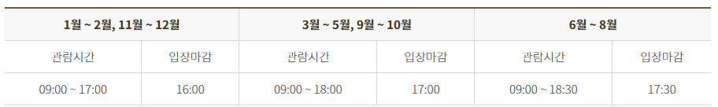
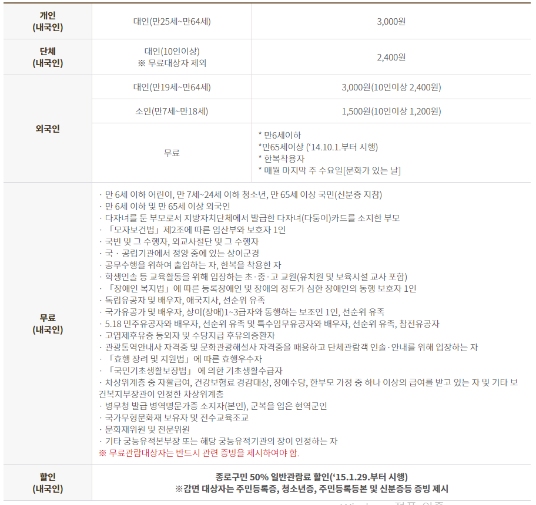
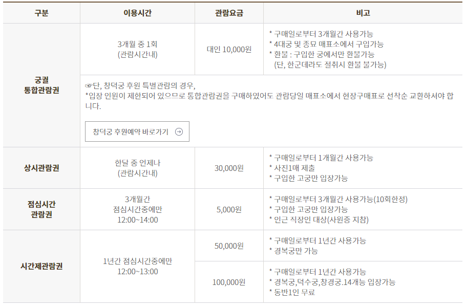
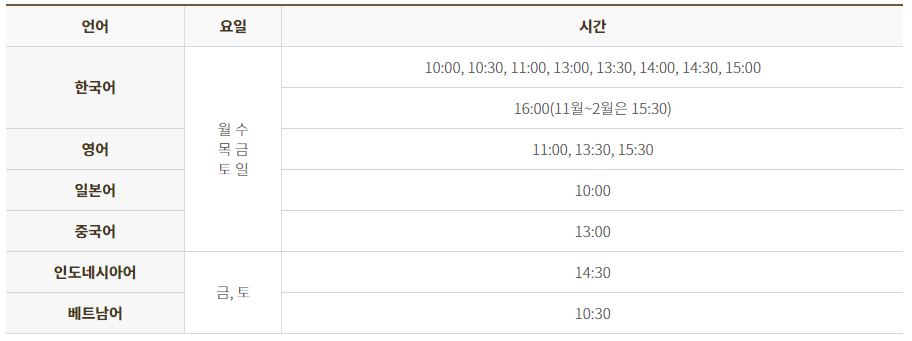
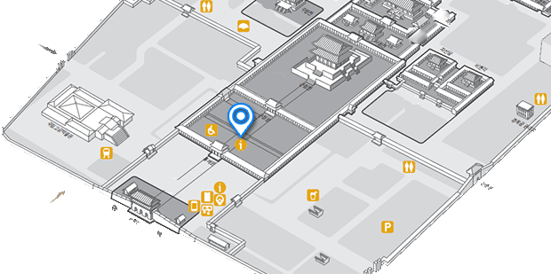
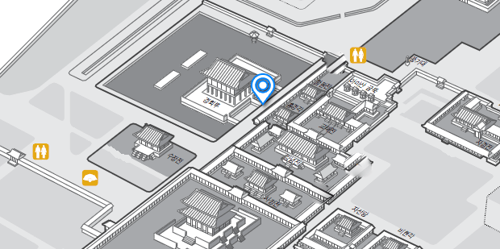
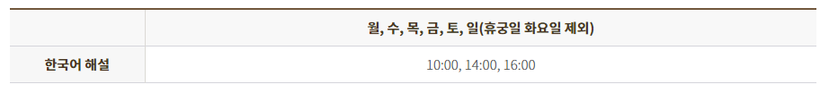
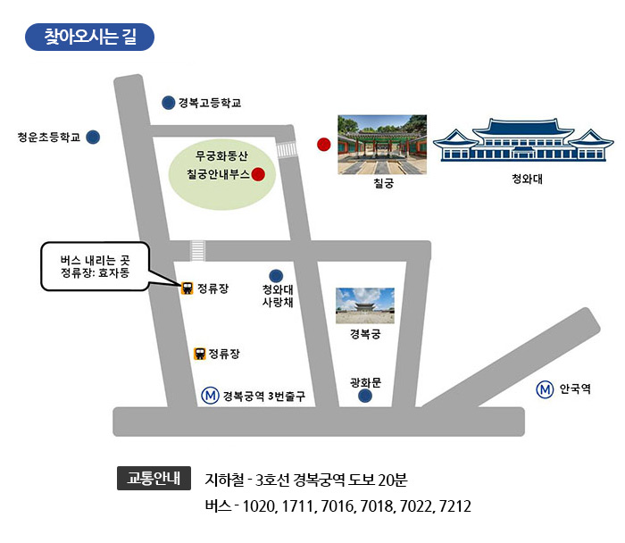

경복궁 관람안내
정기 휴관일
-매주 화요일
관람시간
※ 기관 사정에 따라 관람시간 단축 및 조정이 있을 수 있습니다.
관람요금
※일반권
※특별권

정규해설중지 (2020년 12월 8일~별도 공지 시 까지)
(※코로나19 상황추이에 따라 변경)

정규해설

-경복궁 정규 해설은 해설사의 스토리텔링을 들으며 경복궁의 주요한 전각을 둘러보는 것입니다.
-코로나19 확산방지를 위하여 다음과 같이 운영하오니 양해해 주시기 바랍니다.
-해설관람 참여시 안전거리(1~2m)를 유지해 주시고, 대화 자제 및 마스크를 상시 착용해 주십시오.
-‘생활 속 거리두기’를 유지하기 위하여 관람 동선은 유동적으로 변경될 수 있습니다.
-참가 인원 : 회당 10명(단체관람 불가)
-참가 방법 : 선착순 개인 현장접수(매회 관람시간 30분 전부터)
※ 안전거리 확보를 위해 단체예약은 받지 않습니다.
-소요 시간 : 약 1시간
-접수하신 후 지정한 장소에서 안전거리를 유지하면서 대기하시면 정각에 해설사와 함께 관람하실 수 있습니다.
-마스크 미착용자, 37.5도 이상 발열 및 호흡기 의심증상자는 참여하실수 없습니다.
-정규해설은 불특정 다수의 관람객을 대상으로 이루어지므로 이해가 부족한 초등학교 저학년 및 미취학 아동단체는 참여하실수 없습니다.
-정규해설은 출발시간을 엄수하며 출발시간이 지나면 참여하실 수 없습니다.
-문화재 해설 중 동영상 촬영 및 녹음은 해당 문화재 해설사의 사전 승인 없이는 불가능합니다.
우천 시에도 진행합니다.
-위 사항은 외국어 해설에도 적용됩니다.
-외국어 안내해설시, 내국인은 참여 불가능합니다. 단, 외국인 동반한 내국인은 참여 가능합니다.
-문의 사항
* 경복궁안내실 : 02-3700-3900, -3904, -3905
* 중국어 여행사 예약 전용 : 02-723-4268(한국여행업협회)
경회루 특별관람 해설 (매년 4월 ~ 10월)
 관람방법
전원 선착순 예약제 회당 20명까지 (한국인 15명, 외국인 5명) / 1인당 2명까지 예약 가능합니다.
※ 안전거리 확보를 위해 단체예약은 받지 않습니다.
초등학생 이상은 1인에 해당합니다.
초등학생 이상은 1인에 해당합니다.
관람희망일 7일 전, 오전 10시부터 하루 전까지 선착순으로 마감됩니다.
해설사의 인솔 하에 관람하며, 한국어로만 해설합니다.
우천 시에도 진행합니다. (단, 누각 위로 올라가는 것이 문화재 보호 상 위험하다고 판단되는 경우사전예고 없이 중단될 수 있습니다.)
시작하는 곳
경회루 옆 함홍문
소요시간
40분
칠궁 관람 해설 (* 코로나-19 상호항 추이에 따라 운영 방법 변경)
해설관람 -> 자유관람
관람 운영 변경
기간
2020년 12월 8일~ 별도 공지 시 까지
관람일자
매주 화요일 ~ 토요일( 주 5일 / 일요일, 월요일 휴궁 )
관람요금
무료
입장시간
1일 7회 시간제 자유관람 ( 09:20, 10:20, 11:20, 13:20, 14:20, 15:20, 16:20 )
관람 소요시간
50분
관람방법
현장접수(무궁화동산 안내부스) ※ 단체관람 접수 불가
관람 당일 입장 시 신분증 제시
선착순 10명 제한
칠궁 관람시 주의사항
-문화재 보호 및 원활한 관람을 위해 문화재 해설사의 인솔하에 관람하며, 외국어 해설은 하지 않습니다.
-신분증(주민등록증 또는 운전면허증 또는 여권)과 소지하여 관람시간 10분 전까지 무궁화동산 내 집합 장소[안내부스 앞]에서 대기하여 주십시오.
-칠궁 특별관람이 시작되면 입장할 수 없습니다.
-칠궁 관람은 약 40분 가량 소요되며, 정해진 시간 외에는 관람이 불가합니다.
-칠궁 주차장은 별도로 없으니 대중교통을 이용하시기 바랍니다.
※ 문의 전화번호 : 02-734-7720